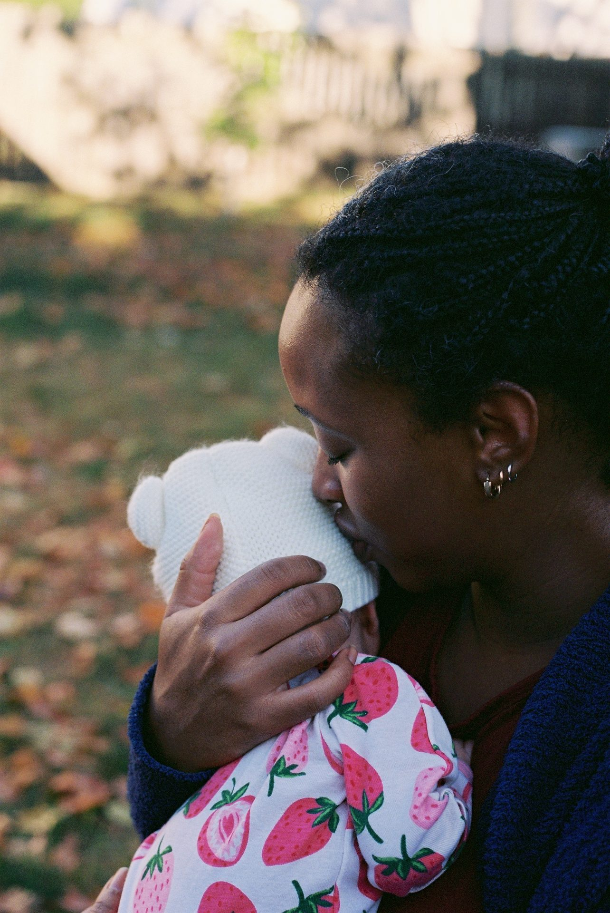
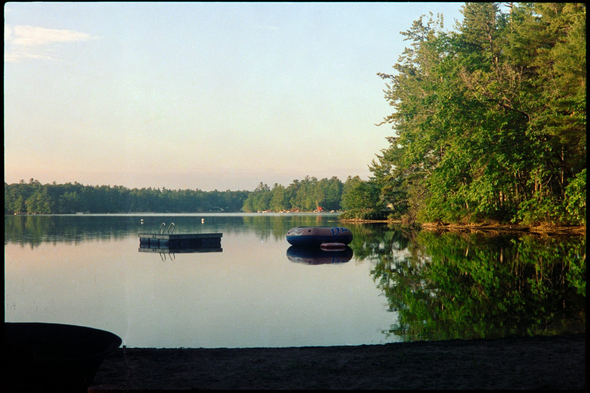
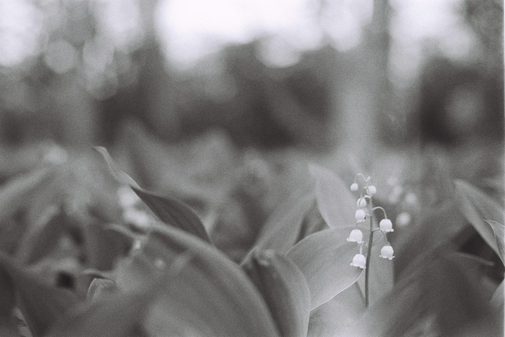
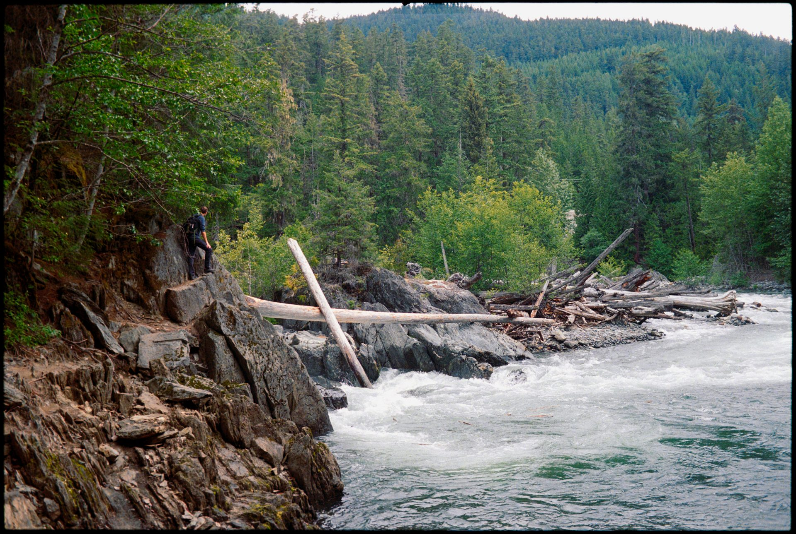
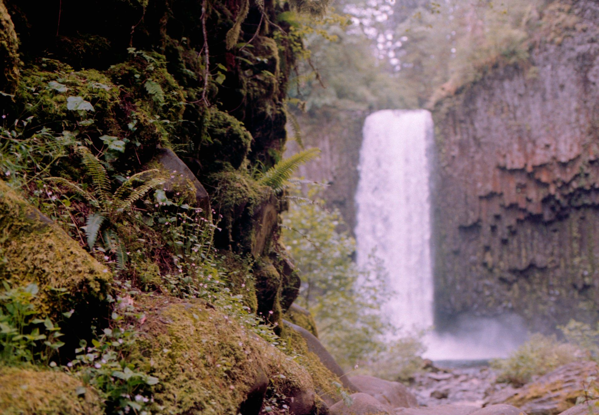
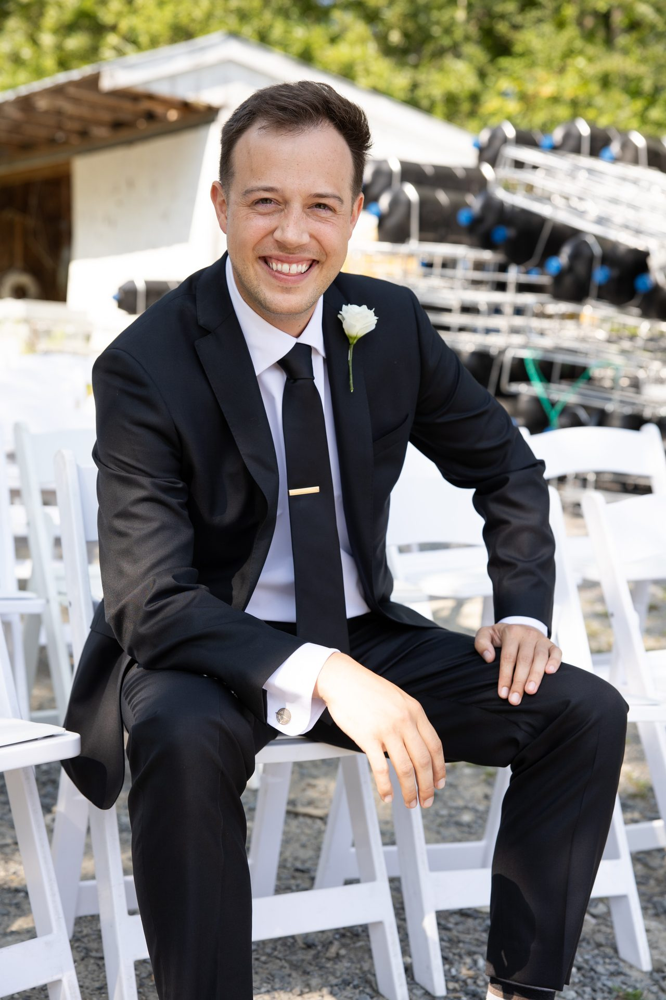

Portrait Sessions · 35mm Film
This is what Tom does. Every portrait session is shot outside, on film, in natural light. These are from a recent film session.

Newborn Session · 35mm Film

Newborn Session · 35mm Film
Film Portrait Photographer · Columbus, Ohio
Portraits shot on 35mm film. Natural light. Outdoor locations across Central Ohio. Golden hour preferred.
Portrait Sessions · 35mm Film
This is what Tom does. Every portrait session is shot outside, on film, in natural light. These are from a recent film session.

The Work · 35mm Film



The Eye Behind the Lens
Portrait sessions are just one part of the work. Tom shoots on film everywhere he goes — Maine, Whistler, Paris, the Pacific Northwest.



Book a Session
Every session is shot outdoors on 35mm analog film. Natural light. No flash. Columbus and Central Ohio locations — or somewhere that means something to you.
Sessions are booked by email. Tom will get back to you within a few days to confirm timing, location, and details.
How It Works
Tell Tom what you're looking for — dates, location ideas, what matters to you about the shoot.
One hour outdoors, two rolls of film, natural light. No artificial lighting. No rush.
Film is sent to Midwest Photo in Columbus for professional development and high-res scanning.
Scanned images delivered digitally. Film originals available for fine art prints made to order.
Where We Shoot
Tom is an Upper Arlington native and knows Central Ohio well. These are some favorite spots — or bring your own.
A hidden gorge with waterfall and dense Ohio woodland. Golden hour light filters through the canopy in a way that's made for film.
The Quarry Rock trail above the Scioto River. Big sky, open water views, dramatic cliffs. One of Columbus's most underrated spots.
Classic park architecture, old-growth trees, and a quiet Merion Village feel. Great for portraits that lean relaxed and timeless.
A tucked-away waterfall and ravine in a suburban Dublin neighborhood. Lush and quiet — easy to forget you're in Central Ohio.
Dense Ohio forest, seasonal color, wide open meadows. Great for natural, unhurried portraits with room to move.
About an hour south — Old Man's Cave, Cedar Falls, Conkles Hollow. Worth the drive for the right shoot. Some of Ohio's best landscape.

I'm Tom Lotozo — a film photographer based in Columbus, Ohio. I grew up in Upper Arlington and have been shooting on film for five years. Most of my work is landscape and travel, but I've come to love what the medium does to portraits: the grain, the natural color rendering, the fact that every frame costs something and makes you slow down and see.
I shoot almost entirely outdoors and almost entirely in natural light. Evening light is my preference — the hour or two before sunset where everything gets warm and the shadows go long. Film handles that light in a way that digital doesn't quite replicate.
I send all my film to Midwest Photo here in Columbus for development, then scan the negatives myself. Turnaround is typically around two weeks from your session to delivery.
If you want portraits that feel like something you actually want to frame — reach out.
↗ @tibetanplatoz on InstagramGet in Touch
Sessions start at $500. Book by email — tell Tom your dates, location ideas, and what you're going for.
FAQ
A portrait session is $500. That includes one hour of shooting, two rolls of 35mm film (approximately 72 frames), professional lab development, and scanned high-resolution digital images delivered within about two weeks. For extended sessions, email to discuss.
Evening, during golden hour — the last one to two hours before sunset. Natural light at that time is warm, soft, and directional, and it suits the character of film beautifully. It's the best light for portraits, full stop.
Anywhere outdoors in and around Columbus — Hayden Falls, Griggs Reservoir, Schiller Park, Indian Run Falls in Dublin, Blendon Woods, and Hocking Hills are some favorites. If you have a location that means something to you, bring it up and we'll make it work.
Film goes to Midwest Photo in Columbus for professional development, then negatives are scanned. Turnaround is typically around two weeks from your session.
For portrait sessions I shoot on a Nikon FE — a precision 35mm camera with beautiful natural light rendering. Film stocks include Kodak Portra 400 and Kodak Gold for color, and Ilford HP5 for black and white, each chosen for how it handles skin tones and available light.
Yes — fine art prints are available made to order from film originals. Email lotozot@gmail.com to ask about a specific image.
Email lotozot@gmail.com. Tell Tom your preferred dates, any location ideas, and what you're looking for. He'll get back to you within a few days to confirm details.
Absolutely. Tom shoots both color and black and white regularly — color with Kodak Portra or Gold, and black and white with Ilford HP5. If you have a preference, just mention it when you book. Some locations and lighting conditions lend themselves better to one or the other, and Tom can advise based on your session.
Wear what feels like you — film responds well to natural tones, textures, and layers. Avoid busy patterns or logos that might distract. Neutrals, earth tones, denim, and natural fabrics all tend to photograph beautifully on film. Coordinate with whoever you're bringing, but you don't need to match perfectly.
Yes, for the right shoot. Hocking Hills is about an hour south and worth the drive. Tom has also done sessions at locations meaningful to clients — if you have somewhere in mind, reach out and he'll let you know if it's workable. Travel fees may apply for locations significantly outside Central Ohio.
Overcast days can actually be great for film portraits — diffused light is soft and flattering with no harsh shadows. Rain is usually a reschedule. Tom will keep an eye on the forecast and reach out ahead of your session if it looks like the weather is going to be a problem. Rescheduling is easy.
Tom's focus is portrait sessions — individuals, couples, and small groups. He doesn't currently take on full wedding packages. For a specific moment you want on film — an engagement, an anniversary, a family gathering — email and describe what you have in mind.